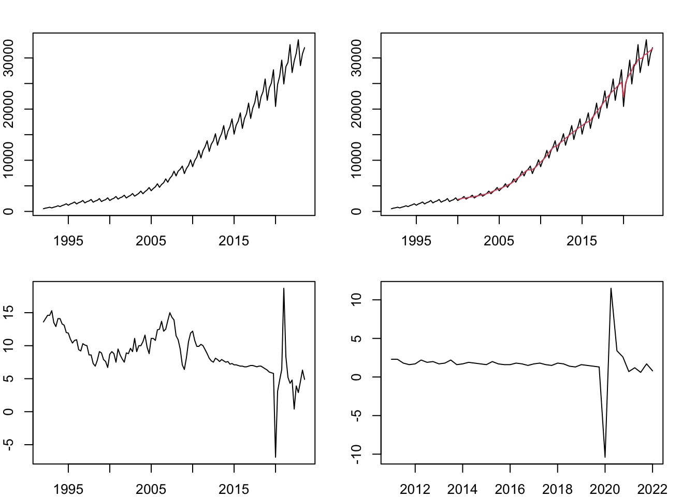

1 Time Series Data
Raw data
We are not so interested in the raw data without any transformation, as it is hard to read information from it. Take the GDP as an example (Figure 1.1, upper-left). There is an overall upward trend. But we are more interested in: how much does the economy grow this year? Is it better or worse than last year? The answers are not obvious from the raw data. Besides, there are obvious seasonal fluctuations. Usually the first quarter has the lowest value in a whole year, due to holidays that significantly reduce the working days in the first quarter. But this does not necessarily mean the economic condition of the first quarter is worse than others. The seasonality prohibits us from sensibly comparing the values of two consecutive quarters.
Growth rates
The headline GDP growth rates are usually reported by comparing the current quarter with the same quarter from last year: \(g=\frac{x_t - x_{t-4}}{x_{t-4}}\times 100.\) As mentioned above, due to seasonal patterns, comparing two consecutive quarters does not make sense. The year-on-year growth rate tells us how fast the economy grows. However, it loses the information about absolute levels. That comes with sereval drawbacks. For instance, it is hard to tell whether the economy recovers to the pre-pandemic level after the shock. Due to the unprecedented impact of the pandemic, the GDP for 2020 is exceptionally low, which renders the growth rate for 2021 artifically high. This is undesirable, because it does not mean the economy in 2021 is actually good. We would like a growth rate that shirks off the excessive influence of past observations.
That’s why we sometimes prefer (annualized) quarterly growth rate: \(g=\frac{x_t-x_{t-1}}{x_{t-1}}\times 400.\) Due to seasonally patterns, two consecutive quarters are not comparable directly. But, since this pattern is the same every year, it is possible to remove the seasonal fluctuations. This is called seasonally adjustment. We will not cover the seasonal adjustment method here. But this is something that can be done. After seasonally adjusting the data, we can calculate the growth rate based on two consecutive values (annualized by multiplying \(4\)). The bottom-right panel of Figure 1.1 shows the seasonally-adjusted quarterly growth. Note that it is no longer biased upward in 2021 as the year-on-year growth rate.
Seasonally-adjusted data
This is usually the data format we would prefer in time series analysis. FRED reports both seasonally-adjusted and non-seasonally-adjusted series. The method for seasonal adjustment is a science in itself. Popular algorithms include X-13-ARIMA developed by the United States Census Bureau, TRAMO/SEATS developed by the Bank of Spain, and so on.
Logarithms
We like to work with log values. Lots of economic time series exhibit exponential growth, such as GDP. Taking logs convert them to linear. Another amazing fact about logs is that the difference between two log values can be interpreted as percentage growth. To see this, by Taylor’s theorem, we have \(\ln(\Delta x +1) \approx \Delta x\) for small values of \(\Delta x\). Therefore,
\[ \ln x_t - \ln x_{t-1} = \ln\left(\frac{x_t}{x_{t-1}}\right) = \ln\left(\frac{x_t-x_{t-1}}{x_{t-1}}+1\right) \approx \frac{x_t-x_{t-1}}{x_{t-1}}. \]
So it is very handy to just difference the log levels to get the growth rates. Log-difference can also be interpreted as the continuously compounded rate of change:
\[ \frac{x_t}{x_{t-1}}=e^g \implies g = \ln x_t - \ln x_{t-1}. \]
Log-difference also has the property of summability: summing up a sequence of log-differences gives back the log level provided the initial level. It is not as handy if you want to recover the levels from percentage growth.
\[ \ln x_t = x_0 + \sum_{j=1}^{t} (\ln x_j - \ln x_{j-1}). \]